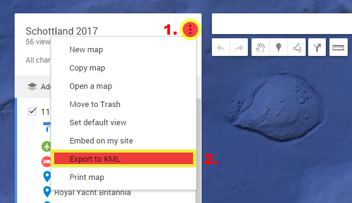

Convert your markers/waypoints from your Google MyMaps to OsmAnd(+) Favourites
1. Goto Google MyMaps and open the map that includes the markers or waypoints you want to use as your waypoints in OsmAnd(+)
2. Open the menu (on mobile you have to click on the "legend"-button first to see the menu) and select "Export to KML"
3. In the upcoming popup window mark the checkbox "Export to a .KML file" and click on the "DOWNLOAD"-Button
NOTE: .kmz files are not supported by the kml2gpx-converter
4. Upload the downloaded file to the converter:
This one's a little harder since OsmAnd(+) doesn't provide any function to import a file into the favourites.
1. Locate the old favourites.gpx on your phone.
Open the filemanager on your phone.
On an Android phone there are two paths where the favourites.gpx may be found:
A) On you phone's localstorage under android->data->net.osmand(.plus)->files
B) On your phone's SDCARD under android->data->net.osmand(.plus)->files
Depending to the settings you made inside the OsmAnd(+)-App, you will find the favourites.gpx in one of the two folders.
2. Manually backup your old favourites.gpx (or not).
Simplest way is just to rename the favourites.gpx to something like favourites.gpx.bak
3. Copy the downloaded favourites.gpx and overwrite the current file inside the net.osmand(.plus)-folder
1. Locate the old favourites.gpx on your phone.
Open the filemanager on your phone.
2. Manually backup your old favourites.gpx (or not).
Simplest way is just to rename the favourites.gpx to something like favourites.gpx.bak
3. Copy the downloaded favourites.gpx and overwrite the current file inside the net.osmand(.plus)-folder